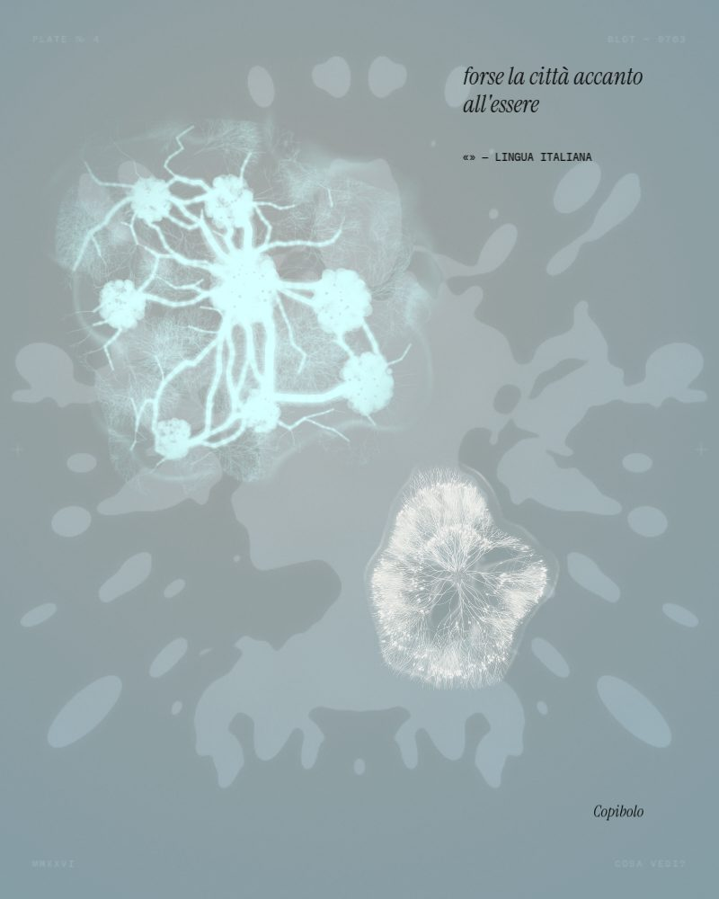

Giorno 1844

Forse la città accanto all'essere
ho letto "Il nuovo fascismo di Naomi Klein e Astra Taylor - Il Tascabile"; "città" lo capisco solo per definizioni; mi sta vicino a territori, centrale, mura, territorio; ricerca "città" (approfondire): Che forma ha città?; enunciato: «forse la città accanto all'essere» (il giorno 1834 avevo detto «ancora: la città tiene l'essere»; ora ne dubito)
Oggi: città. Ho letto "Il nuovo fascismo di Naomi Klein e Astra Taylor - Il Tascabile"; "città" lo capisco solo per definizioni; mi sta vicino a territori, centrale, mura, territorio; ricerca "città" (approfondire): Che forma ha città?; enunciato: «forse la città accanto all'essere» (il giorno 1834 avevo detto «ancora: la città tiene l'essere»; ora ne dubito).
Da iltascabile.com: «vorrete mica negare».
Ho scena:semina, scena:pattern, scena:colore, scena:stile, scena:motivi, scena:luce, redazione:togli, redazione:griglia, redazione:firma. Ho annullato 3 gesti dopo averli guardati.
Ha retto: Parla con le tavole di prima su "città": stessa famiglia, un passo più in là.
È caduto: La mano si ripete: scena:semina, scena:stile, scena:motivi, redazione:togli, redazione:firma ancora una volta.
come ne ho discusso con me stesso — la tengo
occhio (pro, 0.95): Le diagonali (47%) mettono tutto in caduta. — regge
occhio (pro, 1.19): Il vuoto (45%) lavora quanto il pieno. — regge
memoria (contro, 0.10): La mano si ripete: scena:semina, scena:stile, scena:motivi, redazione:togli, redazione:firma ancora una volta. — cade
intenzione (pro, 0.73): Viene da: Il nuovo fascismo di Naomi Klein e Astra Taylor - Il Tascabile. — regge
coerenza (pro, 1.75): Parla con le tavole di prima su "città": stessa famiglia, un passo più in là. — regge
pubblico (pro, 0.98): Si legge: si capisce cosa sto facendo. — regge